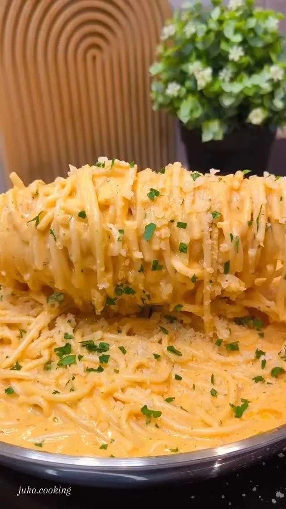

Ultra cremige Tomaten-Knoblauch-Pasta
Minimaler Aufwand, maximaler Geschmack
- 9 Zutaten
- 5 Schritte
Zur Zubereitung Video ansehen ↗
Zutaten
Zubereitung
- Spaghetti kochen und 2 Kellen Nudelwasser aufheben.
- Tomaten & Knoblauch 20 Minuten bei 220 °C backen.
- Mit Frischkäse, Parmesan, Salz & Nudelwasser mixen.
- Butter in der Pfanne goldbraun braten.
- Soße und Spaghetti dazugeben, gut vermengen und mit gehackter Petersilie bestreuen – fertig!